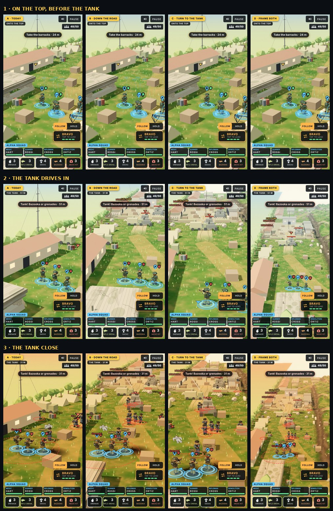

Two drafts, both filmed in the real game on a phone held upright. First, four cameras on the top of the hill at the moment the tank comes down the road. Then the squad you aren't playing: five ways it could follow yours, each filmed in the same fight, with the same moves for Alpha.
1 · The camera on the top
Alpha comes up onto the top and walks to the barracks' door. That's when the tank and the counterattack's infantry come out of their base and down the road from the east. Nobody gets hurt in these films, so you only see what the cameras do. Bravo follows behind.
All four at once
Watch from the moment the tank's arrow appears at the right edge of A.
A TodayB Down the roadC Turn to the tankD Frame both
A Today
Follows the man furthest ahead and faces along the way up. The way up ends at the barracks, so on the top it faces the barracks, and the tank comes in from the right, off the screen (only its arrow at the edge shows).
Good
Nothing new to learn.
Not so good
What you saw: the barracks fills the view while the tank comes from the side.
B Down the road
On the top, the way ahead is the road east, to their base, the way the counterattack comes. The game already turns this way, but only once the barracks is taken. Here it turns as soon as you're on the top.
Good
The tank drives straight at you, up the screen. Whatever comes down the road is in view.
Not so good
The barracks you're taking is at the side of the screen, not ahead.
C Turn to the tank
As B, and whenever a tank comes within 90 m of your men the camera turns to face it and slides a little toward it (8 m at most), so the tank is up the screen wherever it is. Once it's knocked out, back to the road.
Good
The tank stays in view on every map, wherever it comes from.
Not so good
Here it's much like B, because this tank comes down the road. While a tank is about, the camera keeps looking at it rather than where you're going.
D Frame both
As C, and it also pulls back as far as it needs to keep your men and the tank on the screen together, then closes in again as the tank comes near.
Good
You see the whole fight: your men, the tank and the men coming with it.
Not so good
Your men are small while the tank is far off, and the view keeps zooming.
Three moments side by side

My pick: C. On the top it faces down the road like B, and when a tank comes it turns to it. Here that gives the same view as B; on the other maps the tank stays in view wherever it drives. D shows the most, but on a phone your men get too small.
2 · The squad you aren't playing
The control. The team tabs come back as they were before Version 168: tap ALPHA or BRAVO to play that squad. The tab of the squad you aren't playing gets a small switch: FOLLOW, the default, or HOLD. Tap it to change. On HOLD the squad stays in cover where it is and pins down whatever yours is shooting. Playing Bravo, it's Alpha's tab that has the switch. Try it here:
You're playing Alpha. Bravo follows.Tap a tab to play that squad. Tap FOLLOW or HOLD on the other tab to switch it.
How it follows. Five ways, each filmed in the same fight from the landing: a bot plays Alpha (every 7 seconds, once it's arrived, a move 15 m further up the beach, and it fires on the nearest enemy it can see). Only Bravo's way of following differs. Bravo's way is drawn as an orange dashed line with a ring where each man is going (the game doesn't draw it). The camera keeps both squads on the screen. Nobody gets hurt in the films; the numbers below come from fights where they do.
In every version Bravo still sees to its own wounded first, uses its kit by itself (rockets at tanks and guns, grenades, smoke when pinned), and shoots whoever Alpha is shooting if it can see him.
Today Follow
The game's FOLLOW now: Bravo goes to cover about 12 m behind Alpha, and only moves up once Alpha has gone 6 m from where it was.
Good
Bravo stays out of Alpha's way and out of the worst of the fire.
Not so good
It's always late and far back: two squads, not one team.
1 Close behind
The moment you send Alpha somewhere, Bravo goes too: to cover about 5 m behind where Alpha is going and 3 m to one side. If it ends up more than 7 m from that, it catches up.
Good
One tap moves eight men. Bravo is right there to help Alpha's wounded.
Not so good
Bunched up: a shell or a machine gun can catch both squads.
2 Side by side
The moment you send Alpha, Bravo goes to cover level with where Alpha is going, about 8 m to one side (the other side if there's nothing there). Both squads are in the front line.
Good
The most like one big team: twice the guns at the front, spread out.
Not so good
Bravo takes as much fire as Alpha. It needs cover beside yours, and on the narrow draw there isn't always room.
3 Leapfrog
While Alpha moves, Bravo stays and pins down what Alpha is shooting, or the nearest gun that can see Alpha. When Alpha stops, Bravo moves up past it to cover up to 10 m further on. Then Alpha goes past Bravo, and so on.
Good
Real fire and movement: one squad always covers the one moving. Bravo kills the most and loses no more men than today.
Not so good
On average Bravo is as far from Alpha as today, and it moves ahead of where you put Alpha by itself.
4 Pincer
Close behind, as in 1, until Alpha opens fire on a man. Then Bravo works round to cover off to one side of him, about 60 degrees round from Alpha at the same range, and throws a grenade at him once he's in reach.
Good
The man Alpha is shooting can't hide from both squads.
Not so good
Bravo goes off on its own, and on the beach the side it works round to is often open sand under another gun.
The numbers
Four fights of two and a half minutes each, from the landing, with real fire. A bot plays Alpha as in the films. The results swing a lot from one fight to the next, so take them as a rough guide.
Bravo’s way
Apart (m)
Over 20 m apart
Bravo in front
Bravo’s kills
Damage taken · Alpha
Damage taken · Bravo
Men downed · Alpha
Men downed · Bravo
Furthest up the beach (m)
Fights
Today · follow
19.6
43%
8%
5.0
1147
640
6.5
2.8
97
4
1 · Close behind
13.0
15%
30%
5.5
1214
1019
6.2
5.0
100
4
2 · Side by side
12.0
11%
20%
1.8
1102
965
6.5
5.2
129
4
3 · Leapfrog
20.3
41%
25%
6.0
1250
1007
6.5
2.8
132
4
4 · Pincer
18.4
40%
32%
4.2
1196
933
6.0
2.8
125
4
5 · Side by side + safe pincer
15.0
24%
24%
3.5
1216
807
5.8
4.8
121
4
5, side by side with the pincer only when it's safe (added after you asked): Bravo stays beside Alpha, and swings round the man Alpha is shooting only if he's behind cover from Alpha, there's a spot round his side that no other German gun can see, and the way there stays out of their fire. In the four beach fights it never swung: every time, another gun covered the ground round his side, so it fought like side by side. Set up on the top with one man behind a crate and nobody else about, it swung round him; with a second gun watching that ground, it stayed beside Alpha.
My pick: 2, side by side, taken in turns. Side by side keeps Bravo closest (12 m from Alpha on average, against 20 m today) and one tap moves both squads. The catch: with the two squads that close together, Bravo had about twice as many men knocked down (5 a fight against under 3), most likely because one shell or one machine gun can catch both squads at once. It also shot less while it kept moving with Alpha. Leapfrog kept Bravo's losses as low as today's and had it kill the most, because it stands and shoots while Alpha moves. So I'd build side by side in turns: while Alpha runs, Bravo pins down whatever Alpha is shooting; once Alpha is in cover, Bravo moves up beside it, a little further out than here (10 to 12 m), so one shell can't catch both.